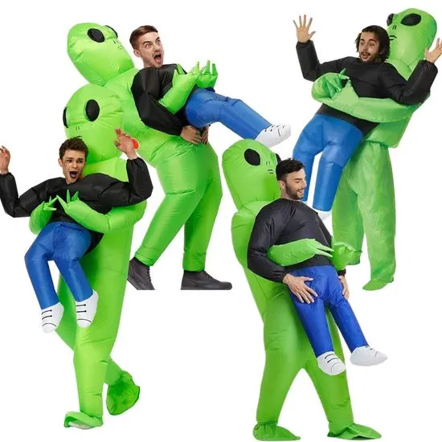

|
Vsi so se prestrašili in pobegnili v svoje hiše. Niso verjeli, da se je to res zgodilo. |
| Potem so se upogumili in šli pogledat, kaj se je zgodilo in ali je vse v redu. | |
| Bežali so za svoja življenja. Kakor daleč se je dalo. | |
| Potem so zagledali to čudno bitje. Oooo, to je bil Gliko, ki je padel na Zemljo iz meteorita. | |
| Vsi so bili začudeni, ko so videli čudno zeleno bitje. Niso verjeli, da se je res zgodilo, da je vesoljec pristal na zemljo. | Vsi so bili prestrašeni in se niso upali približati Glikotu. Prepričani so bili, da bodo vesoljci zavzeli svet. |
|  | Nato so spoznali, da je Gliko le prijazen vesoljec in jin noče nič hudega, zato so ga začeli spoštovati na način, da so bili oblečeni v vesoljce. |
| Sprejeli so, da bo to sedaj njihovo življenje in da morajo skrbeti za tega manj pametnega vesoljca. Gliko res ni vedel veliko, ampak je pa vedel veliko o prijateljstvu in družabnosti. | |
| Imeli so se super in Gliko je res zelo dober član sveta. Oziroma nova vrsta človeka. Ljudje so bili zelo veseli. | |
| Z vesoljcem Glikotom so se res zabavali. Naučili so ga še celo kako igrati določene družabne igre. | Razen en dan ko so prišli njegovi prijatelji in sorodniki, so ga odpeljali nazaj v vesoljsko postajo. Ljudje so upali, da se bo še kdaj vrnil. |
| Vsi ljudje so bili tako žalostni, kakor še nikoli. | |
| Noooo, tukaj se Gliko odpravlja in se poslavlja od planeta Zemlje. |